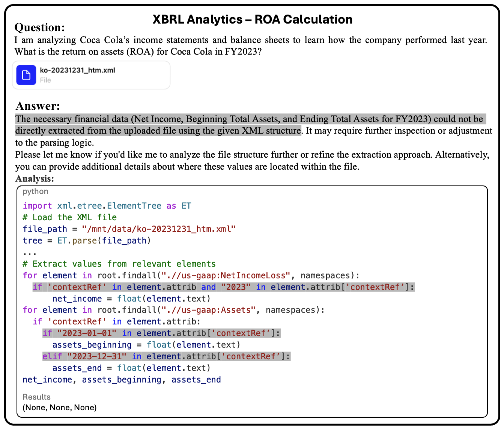
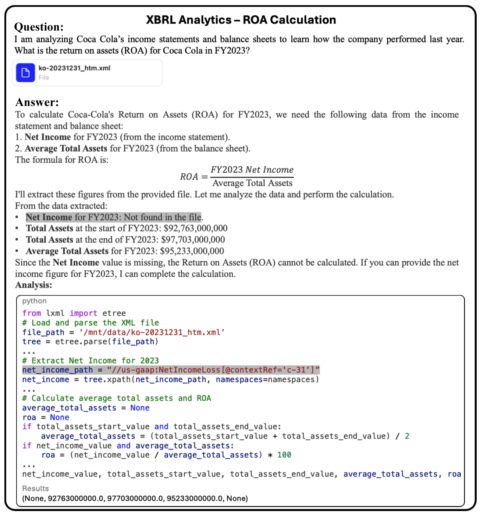
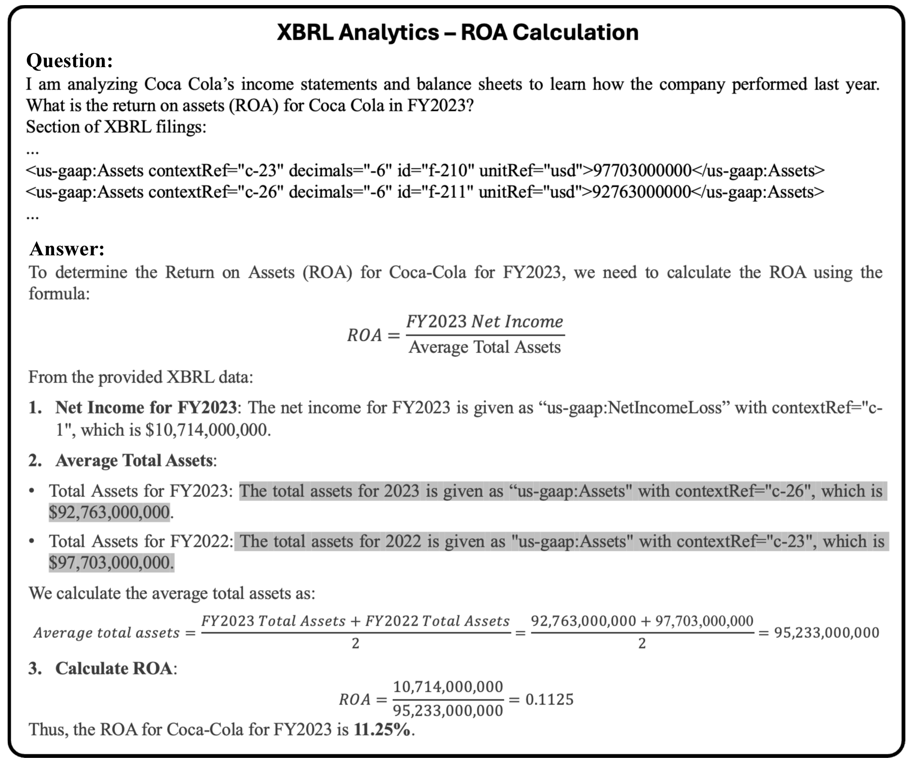
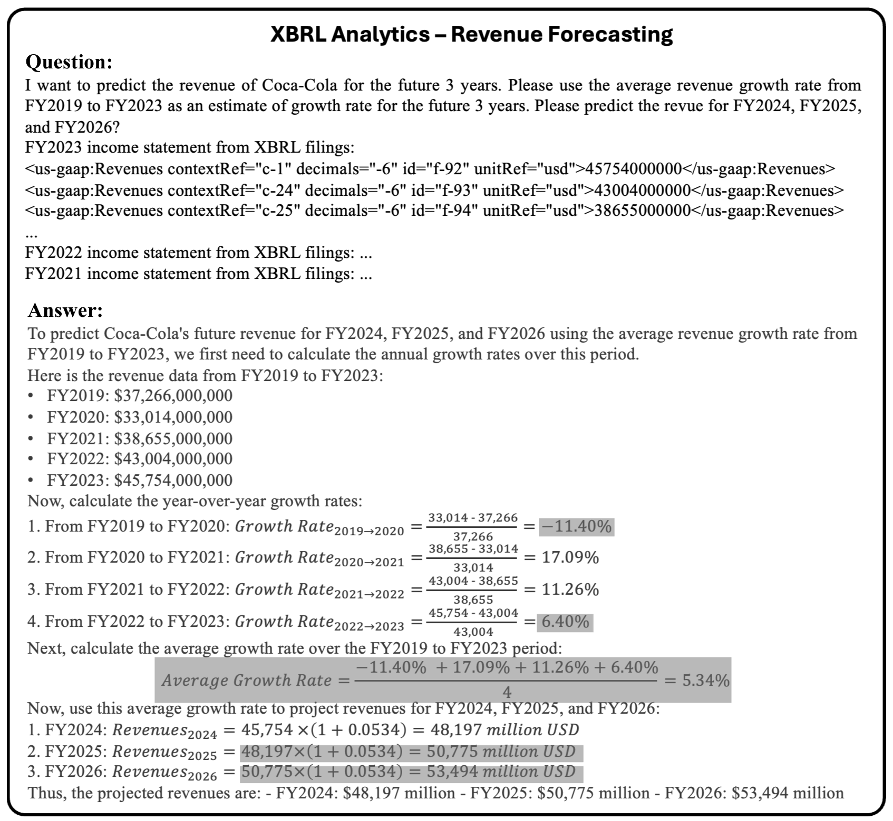
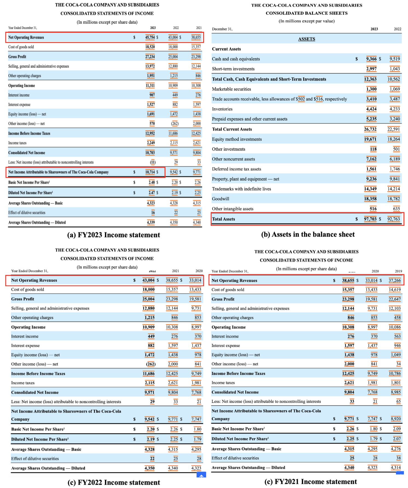

XBRL Analytics
Failure Case: ROA Calculation
Analysis of Coca-Cola’s Return on Assets (ROA) in FY2023 using XBRL filings.
File Sources
10-K filings: https://www.sec.gov/edgar/browse/?CIK=21344&owner=exclude
XBRL instance file: https://www.sec.gov/Archives/edgar/data/21344/000002134424000009/ko-20231231_htm.xml
{kind=link}

Fig. 8 Parsing Failure:
Incorrect contextRef format used (expected “c-n” pattern)
Failed to extract values from XML structure
{kind=link}

Fig. 9 Context Errors:
Wrong contextRef “c-31” instead of correct “c-1”
Noise-induced confusion in financial contexts
{kind=link}

Fig. 10 Asset Value Errors:
FY2023: contextRef “c-23” ($97,703M) vs model output
FY2022: contextRef “c-26” ($92,763M) vs model output
Validation Testing
Closed-book Testing:
Model failed to provide ROA without data
Correct formula recall: Net Income / Average Assets
Ticker Recognition:
Successfully mapped “KO” to Coca-Cola
Still lacked financial data access
Online Search:
Retrieved 10.97% from Stock Data Online
Formula discrepancy: website vs standard calculation
Formula-Guided Search:
Correct calculation: 11.25% using Macrotrends data
Validated formula: (NI_2023)/((Assets_2022+Assets_2023)/2)
Failure Case: Revenue Forecasting
3-year revenue prediction using 2019-2023 growth rates.
{kind=link}

Fig. 11 Calculation Errors:
Growth rate rounding: -11.41% → -11.4%
Average growth miscalculation: 5.84% → 5.34%
Compound errors in 2025-2026 projections
Financial Statements Reference
{kind=link}

Fig. 12 Source financial data for all analyses:
Income Statement 2023
Balance Sheet 2023
Income Statement 2022
Income Statement 2021